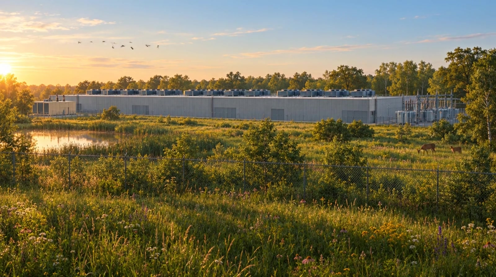

Listen
A microphone at the enclosure captures the dominant tone and its phase.
Active noise cancellation for data centers, with the readings to prove it.
Cooling fans, transformers and generators run all night at one low tone. Residents describe it as a sound they feel more than hear. It keeps people up, it drives down property values, and it is now the subject of lawsuits in Mississippi, Wisconsin and Michigan.
"It manifests like vibrations. You cannot sleep, you cannot have a conversation, you cannot relax in your own house."Resident complaint language from 2026 nuisance filings
One enclosure, one microphone, one speaker, and the same physics that quiets industrial transformers and HVAC plants.
A microphone at the enclosure captures the dominant tone and its phase.
A speaker emits the matched inverse. Peaks cancel, the same physics used on industrial transformers and HVAC, proven to 20 dB.
Live readings compare against the local ordinance and flag when mitigation is maxed out and the limit is still close.
Foam and cardboard absorption catches the broadband noise the cancellation cannot.
Press and hold. Let go early and the hum comes back.

Data centers land on land that used to be quiet. Ecologists use the phrase sensory danger zone for what the hum does to predator and prey, and to birds trying to breed. Cutting noise at the source gives that ground back. The unit reports its own power draw, so the cost of the fix stays honest.
Pick the profile for your county. The dashboard compares every reading against the day and night limit that is in force right now.
| Profile | Day limit | Night limit | Note |
|---|---|---|---|
| Prince William County, VA | 60 dBA | 55 dBA | Residential districts, cooling equipment covered around the clock |
| Divide County, ND | 50 dBA | 45 dBA | Includes low-frequency noise and generators |
| PennFuture model ordinance | 55 dBA | 50 dBA | Upper end of the recommended range at the residential property line |
Prototype readings are not certified compliance measurements.
Public readings for the site near you. Alerts when the night limit is at risk.
The full unit: cancellation hardware, energy transparency, compliance reporting and site intelligence.
Continuous ordinance monitoring, exceedance log, official alerts by text.
No. The prototype uses an ordinary microphone, so its readings are estimates. They are good for trend, for alerts, and for knowing when to call in a certified survey. They are not a legal measurement.
It emits a matched inverse tone inside the enclosure, which is how the peak cancels. The unit draws about 5 W and shows that number on the dashboard next to the decibels it removes, so the trade stays visible.
Walls and berms work on higher frequencies. The low tone that residents complain about bends around them. Cancellation works at the source, on the tone itself, and passive foam takes the broadband remainder.
Yes. The resident plan is free. It shows the live level for a site, the limit in force, and sends a text when the night limit is at risk.